01私生子？
00:23.20–00:25.32 · 红色反差梗花字
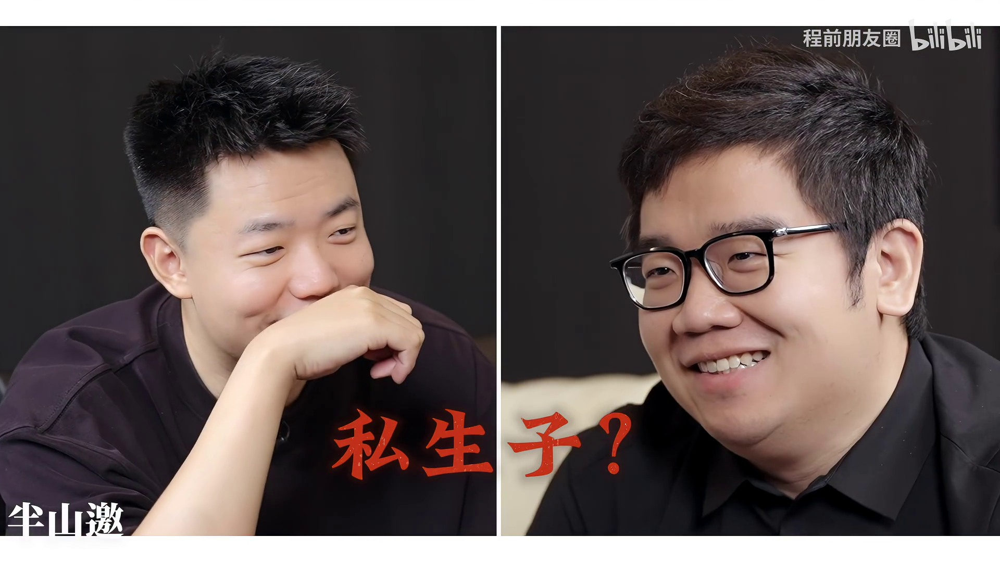
稳定画面 · 00:24.05
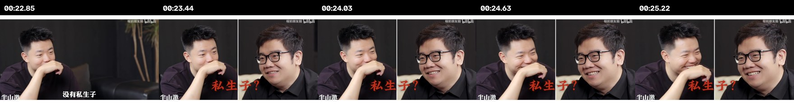
出现前 → 动画中 → 稳定态
放在哪里画面下方跨越人物分割线
字体与色彩红色毛笔字，无底板；问号与主词等大
文字动画先无字，随后整体快速淡入／轻微放大；画面中未观察到逐笔书写
为什么有效对应采访者笑着说出的意外反问，用红色把轻松笑点与前面的严肃交接冲突拉开
原片音效核验未检出独立短促瞬态。检查入点：23.45s；置信度：中。
你可以这样复刻原片未检出独立短促音效。练习时可不加；若加，仅用很轻的木鱼式 click，低于人声峰值约 14–18 dB。
02《半山邀》片名卡
00:25.32–00:30.36 · 全屏章节片名
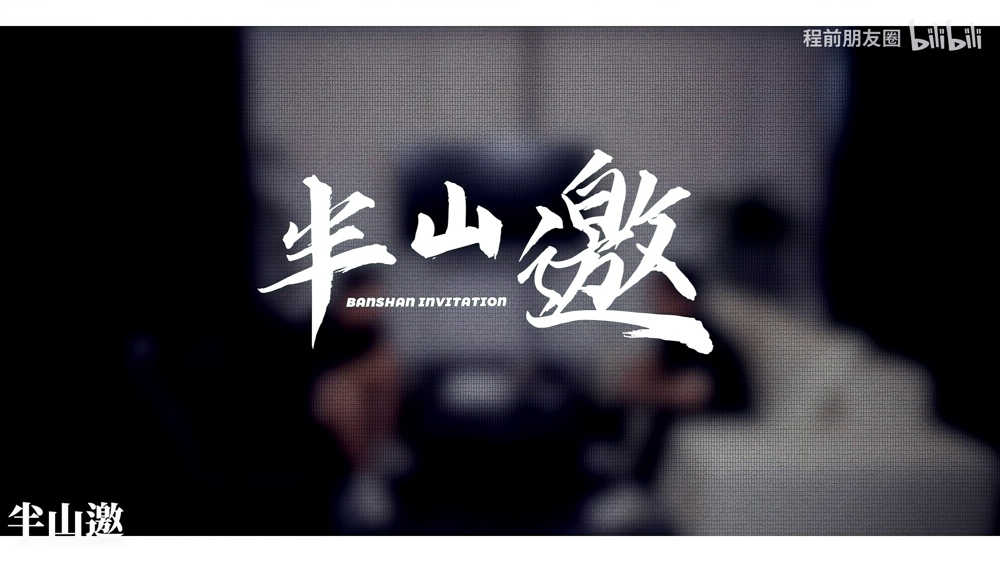
稳定画面 · 00:27.20
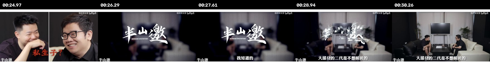
出现前 → 动画中 → 稳定态
放在哪里全屏中央
字体与色彩白色大号书法 Logo，黑白背景，局部墨迹与虚焦
文字动画超大笔画遮罩入场 → Logo 稳定 → 叠影／扫描扰动 → 淡出回采访
为什么有效把 25 秒冷开场与正文问答分开，承担一次视觉和听觉重置
原片音效核验未检出独立短促瞬态。检查入点：25.32s / 28.65s / 29.70s；置信度：中。
你可以这样复刻原片入点未检出可单独确认的撞击声。复刻可选 150–250ms 空气扫过＋一次低频软击，只使用一次。
0330%–40% 愿意接班／60%–70% 不愿意接班
00:30.36–00:36.52 · 统计对照花字
稳定画面 · 00:35.90
出现前 → 动画中 → 稳定态
放在哪里人物左右两侧空白区
字体与色彩百分比白字，结论黄色粗体；同时带小型人物身份标签
文字动画先出现身份标签，再出现左侧统计，最后补右侧统计；分组依次淡入，形成对照
为什么有效把口头比例变成一眼可比较的视觉结论
原片音效核验未检出独立短促瞬态。检查入点：31.20s / 32.55s / 35.45s；置信度：中。
你可以这样复刻原片未检出独立短促音效。练习可给第二组数字一个极轻 tick，但不必每个数字都响。
04躺平心态
00:40.56–00:42.44 · 黄色关键词
稳定画面 · 00:41.80
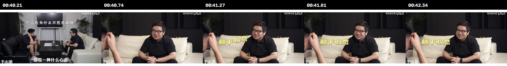
出现前 → 动画中 → 稳定态
放在哪里人物身体旁的低信息区
字体与色彩黄色厚重无衬线体，微倾斜，黑色阴影
文字动画约 0.3 秒快速透明度＋缩放弹入，随后稳定停留
为什么有效把抽象的‘不接班状态’压缩成一个网络化标签
原片音效核验检出短促能量变化，但无法与语音或背景音乐分离。检查入点：41.05s；置信度：低。
你可以这样复刻检测到短促能量变化，但无法与语音／背景音乐分离。复刻可用短 click，音量保持很轻。
05大大的疑惑
00:42.44–00:45.16 · 反应型弧形花字
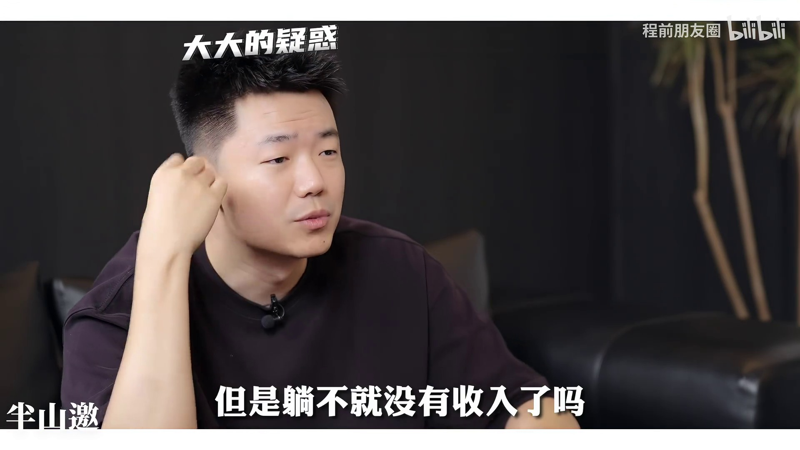
稳定画面 · 00:44.00
出现前 → 动画中 → 稳定态
放在哪里采访者头顶
字体与色彩白色粗体沿弧线排布，配少量装饰符号
文字动画随反应镜头切入时已完整出现，主要靠硬切和弧形排版制造喜感；未见明显独立进场
为什么有效替观众把疑问写在人物头顶，强化采访者表情
原片音效核验未检出独立短促瞬态。检查入点：42.44s；置信度：中。
你可以这样复刻原片未检出独立音效。不要为了搞笑强行加夸张 boing；表情和硬切已经足够。
06普通人／普通牛马／普通生活
00:46.68–00:52.16 · 逐行递进列表
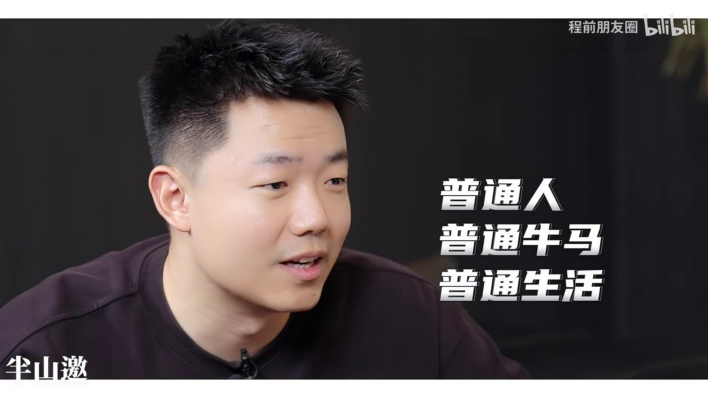
稳定画面 · 00:50.50
出现前 → 动画中 → 稳定态
放在哪里人物右侧
字体与色彩白色粗体三行堆叠，统一左对齐
文字动画每说到一个‘普通’，就新增一行；小幅上移＋淡入，旧行保留
为什么有效把重复句式变成视觉节拍，让口语排比可被看见
原片音效核验检出短促能量变化，但无法与语音或背景音乐分离。检查入点：47.30s / 48.45s / 49.85s；置信度：低。
你可以这样复刻检测到混合音轨能量变化，但类型不确定。练习可每行配同一枚轻 tick，并让后两次音量略低。
07为什么？
00:55.92–00:57.00 · 提问花字
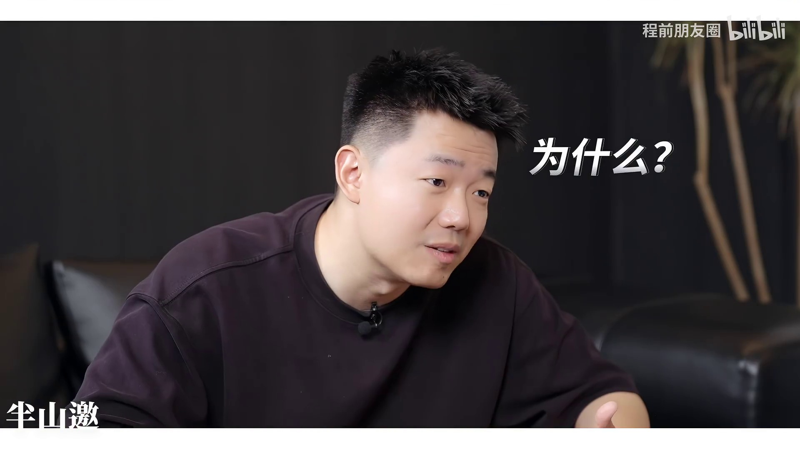
稳定画面 · 00:56.40
出现前 → 动画中 → 稳定态
放在哪里采访者视线方向的空白区
字体与色彩白色粗体，小黑影
文字动画短时淡入／轻微弹入，保持不到 1 秒
为什么有效把追问变成清晰断点，为下一个‘责任、压力’答案蓄力
原片音效核验检出短促能量变化，但无法与语音或背景音乐分离。检查入点：56.05s；置信度：低。
你可以这样复刻检测到能量变化，但很可能来自‘为什么’的语音重音。复刻优先靠停顿，不必加音效。
08责任／压力
00:57.00–01:02.72 · 双关键词递进
稳定画面 · 01:01.20
出现前 → 动画中 → 稳定态
放在哪里受访者左右两侧
字体与色彩黄色粗体，黑影；‘压力’旁有强调装饰线
文字动画先弹入‘责任’，说到下一关键词时再弹入‘压力’，形成左右平衡
为什么有效把接班代价收束成两个可以记住的词
原片音效核验未检出独立短促瞬态。检查入点：57.65s / 60.25s；置信度：中。
你可以这样复刻原片未检出独立短促音效。复刻时如需强调，可给第二个词加一个低频软击，第一个词不响。
09我提的
01:22.48–01:23.60 · 回答重点花字
稳定画面 · 01:23.00
出现前 → 动画中 → 稳定态
放在哪里受访者肩部旁
字体与色彩黄色斜体粗字，黑色投影
文字动画在答案落点快速弹入，0.2–0.3 秒完成
为什么有效突出接班是儿子主动提出，而不是父亲安排
原片音效核验低频短促瞬态，疑似冲击／下坠。检查入点：82.62s；置信度：低。
你可以这样复刻检测到低频短促瞬态候选，但置信度低，可能仍是语音／背景层。复刻可用非常轻的 muted hit。
10我来当！
02:23.10–02:25.36 · 决定性金句
稳定画面 · 02:24.00
出现前 → 动画中 → 稳定态
放在哪里人物左下方但避开字幕
字体与色彩黄色手写体，带感叹号
文字动画整体快速缩放／淡入；与‘我来当’四个字同时到位
为什么有效把漫长铺垫压缩成一个权力交接决定
原片音效核验未检出独立短促瞬态。检查入点：143.15s；置信度：中。
你可以这样复刻原片未检出独立短促音效。更值得模仿的是前面的停顿；若加，只需一次低沉软击。
11离职／毫不犹豫
03:42.30–03:46.96 · 双色立场对照
稳定画面 · 03:44.50
出现前 → 动画中 → 稳定态
放在哪里人物两侧
字体与色彩‘离职’黄色大字，‘毫不犹豫’红色大字；均带黑影
文字动画‘离职’先由小变大，随后另一侧补入红色‘毫不犹豫’，用时间差形成因果
为什么有效视觉化父亲面对员工离职时的强硬反应
原片音效核验未检出独立短促瞬态。检查入点：223.60s / 225.55s；置信度：中。
你可以这样复刻原片未检出可确认的独立音效。复刻可只给红色结论一个低沉 hit，避免两边都响。
12把大家所有长处都发挥出来／带着大家一起走
04:02.88–04:05.20 · 手写观点摘句
稳定画面 · 04:03.20
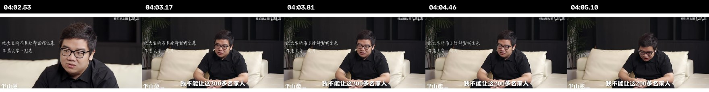
出现前 → 动画中 → 稳定态
放在哪里左上至画面中部
字体与色彩白色手写体，两行，字距宽松
文字动画随镜头切入时整段出现，稳定停留后离开；不是逐字书写动画
为什么有效把上一段管理观念留下来，同时画面进入下一句，形成 J-cut 式观点余韵
原片音效核验检出短促能量变化，但无法与语音或背景音乐分离。检查入点：242.88s；置信度：低。
你可以这样复刻检测到能量变化但无法分离。原片观感主要来自手写字与停留时长；不加音效更稳。
13！
05:49.45–05:52.20 · 情绪符号
稳定画面 · 05:50.10
出现前 → 动画中 → 稳定态
放在哪里受访者头部左侧
字体与色彩白色感叹号＋黑影
文字动画从无到有快速缩放弹入，随后停留
为什么有效替人物被追问时的反应加一个漫画式标点
原片音效核验未检出独立短促瞬态。检查入点：349.55s；置信度：中。
你可以这样复刻原片未检出独立短促瞬态。练习可以用 40–80ms 极轻 click，但不是必需。
14如何服众？／老员工居多
05:53.10–05:58.92 · 问题＋条件叠层
稳定画面 · 05:56.70
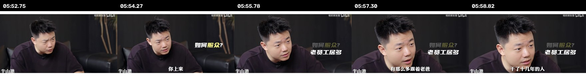
出现前 → 动画中 → 稳定态
放在哪里人物右侧
字体与色彩第一行灰白粗体，其中‘服众’橄榄黄；第二行超大白色粗体，均有黑色错位阴影
文字动画先出现问题，再补更大的条件‘老员工居多’；第二行承担重拍
为什么有效把一个普通追问升级成具体管理难题
原片音效核验未检出独立短促瞬态。检查入点：353.20s / 355.70s；置信度：中。
你可以这样复刻原片未检出独立音效。复刻时可只给第二行一个短促 whoosh，低于人声峰值约 14 dB。
15营收的减少／员工的离职／大家的信赖
06:05.20–06:13.40 · 三项风险清单
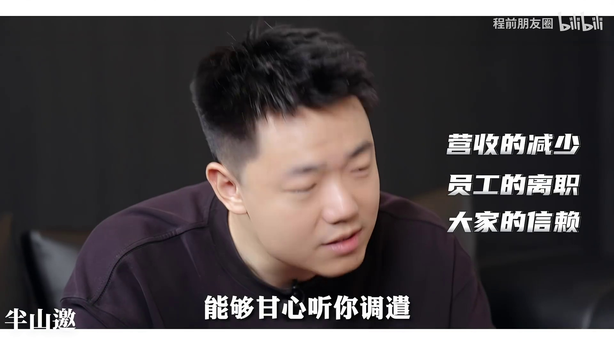
稳定画面 · 06:10.70
出现前 → 动画中 → 稳定态
放在哪里分屏右侧人物旁
字体与色彩白色厚重斜体，黑色错位阴影，三行左对齐
文字动画切成双人分屏后，三个风险按台词顺序逐行增加
为什么有效把采访者连续三个判断标准变成检查清单
原片音效核验检出短促能量变化，但无法与语音或背景音乐分离。检查入点：365.45s / 366.45s / 368.25s；置信度：低。
你可以这样复刻检测到短促能量变化但无法与对话分离。练习时使用同一组轻 tick 即可，不要三次重击。
16海外事故证据卡
07:56.20–08:00.68 · 资料证据卡
稳定画面 · 07:58.00
出现前 → 动画中 → 稳定态
放在哪里人物左侧浮层
字体与色彩白底网页／资料截图，保留原始排版
文字动画镜头切入即出现，基本静态停留；用证据本身而不是花哨动画吸引注意
为什么有效为‘中国宠物食品在海外出过事故’补充可见证据
原片音效核验未检出独立短促瞬态。检查入点：476.20s；置信度：中。
你可以这样复刻原片未检出独立短促音效。若复刻，可加极轻纸张落位声，但应让口述保持主导。
17原料与包装问题资料卡组
08:11.20–08:15.72 · 多卡片信息扩展
稳定画面 · 08:13.50
出现前 → 动画中 → 稳定态
放在哪里由左侧小卡扩展至全屏多列
字体与色彩保留社媒截图原色，用黄／红框标记问题
文字动画单张竖卡出现 → 增加第二张 → 扩展为多卡全屏拼贴；以缩放和位置移动完成
为什么有效把抽象的‘投料与包装不符’变成具体案例
原片音效核验未检出独立音效；更可能依靠语音重音和视觉弹入。检查入点：491.20s / 492.10s / 493.20s；置信度：中。
你可以这样复刻未检出可单独确认的音效。复刻可给首张卡一个 paper pop，后续卡片只用视觉扩展。
18很难找到病因／维权很困难／甄别宠物食品很困难
08:52.20–08:58.24 · 结论递进列表
稳定画面 · 08:56.30
出现前 → 动画中 → 稳定态
放在哪里人物左侧
字体与色彩前两行白色粗体，最后一行黄色；灰黑立体阴影
文字动画三行按语义顺序逐条加入，最后黄色总结行承担最高视觉权重
为什么有效把消费者困境从现象推进到最终判断
原片音效核验未检出独立音效；更可能依靠语音重音和视觉弹入。检查入点：532.45s / 533.45s / 534.55s；置信度：中。
你可以这样复刻未检出独立音效，更可能依靠语音重音。复刻时只给黄色最后一行一个轻微低击即可。
19开放所有摄像头／给所有客户
09:08.50–09:14.00 · 手写承诺摘句
稳定画面 · 09:11.80
出现前 → 动画中 → 稳定态
放在哪里人物左上方
字体与色彩白色手写体，两行
文字动画整段快速淡入，不做逐笔书写；伴随手势保持数秒
为什么有效把抽象的透明承诺变成具体动作
原片音效核验未检出独立音效；更可能依靠语音重音和视觉弹入。检查入点：548.55s；置信度：中。
你可以这样复刻未检出独立音效。原片此处靠手势和语义力度，建议不加音效。
20打消用户的信任危机／打消用户内心的顾虑
09:24.60–09:29.00 · 手写目的摘句
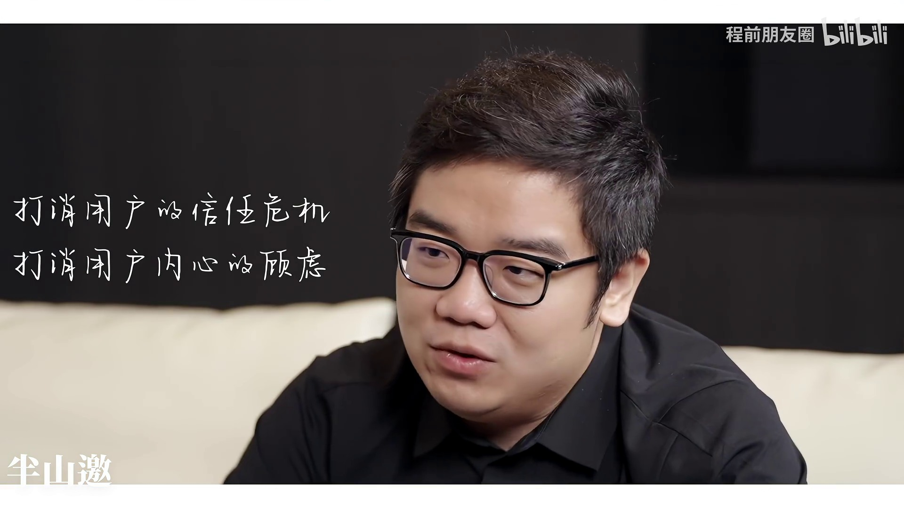
稳定画面 · 09:26.85
出现前 → 动画中 → 稳定态
放在哪里人物左侧
字体与色彩白色手写体，两行
文字动画整段淡入并停留，没有逐字跳动
为什么有效承接上一条‘开放摄像头’，补足目的与价值
原片音效核验未检出独立短促瞬态。检查入点：564.65s；置信度：中。
你可以这样复刻原片未检出独立短促瞬态。保持安静可让观众更专注于承诺。
21我一定要做成！／我也一定能做成！
10:07.20–10:11.16 · 结尾誓言手写花字
稳定画面 · 10:09.30
出现前 → 动画中 → 稳定态
放在哪里人物左侧
字体与色彩白色手写体，两行，感叹号收尾
文字动画先出现第一句，再新增第二句；不清空上一行，形成誓言叠加
为什么有效把结尾从目标陈述推到人格承诺，完成情绪收束
原片音效核验未检出独立短促瞬态。检查入点：607.25s / 608.95s；置信度：中。
你可以这样复刻原片未检出独立短促音效；结尾的背景层与语音本身已经抬升。复刻可让音乐微升，不必另加 hit。